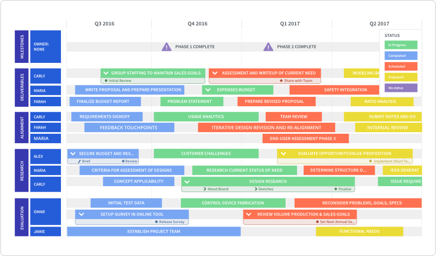
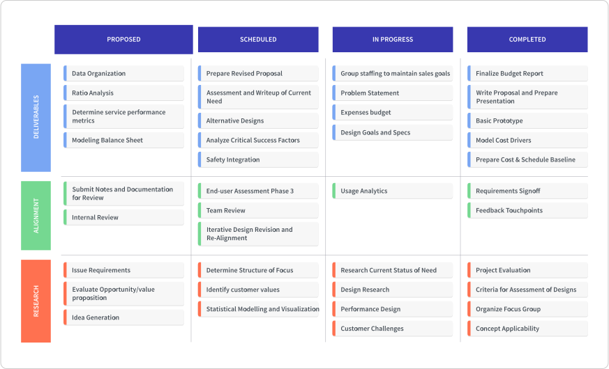

As a project manager, you have a clear-cut mission: lead your team and project to 100% completion, by communicating and aligning everyone on the project in question. A project roadmap helps you precisely do that.
As an underutilized (and underestimated) tool within project management, a project roadmap is a tool we strongly believe should be implemented in a project manager's workflow—even if there's a project plan in place. Here’s our case for why you need a roadmap for project management.
Btw, we also wrote a real-world guide to creating any style of agile roadmap. Download it here.
What is a project roadmap?
To define what a project roadmap is, we need to explain the why behind project roadmaps.
A project roadmap offers a project manager—and their relevant stakeholders—with a high-level overview of the project’s goals, initiatives and deliverables. And we’re not just talking project managers spearheading technical projects. It could be project leads for sales, marketing, HR, or otherwise; this roadmap applies to all your business departments.
A project roadmap is a bird’s eye view of a project, so that a project manager can get all their stakeholders on the same page regarding the major components of the project like milestones and overall objectives.
But what’s the difference between a project roadmap and a project plan?
Well, the key difference between the two is that a project roadmap is what we stressed above: a high-level view of your project.
An effective project plan gets very in the weeds about what must happen for the project to be a success. Your project plan should provide granular answers to questions like:
- What is the value proposition?
- How is the project scope being managed?
- How much budget is allocated to this project?
- What are the biggest risks? And what the contingency plans in place?
It also addresses all the minute details of your project like client names, specific training requirements and staffing schedules. It’s your project’s behind-the-scenes context that shows every aspect of the project has been thoroughly considered and planned.
Your project roadmap is the big picture. It takes all the details in the project plan and surfaces the most crucial factors relevant to all stakeholders. In a really simple analogy, if your project roadmap is a photograph, your project plan is the same photograph under a microscope—so you can see every pixel.
So, why do you need a project roadmap?
Yes, a meticulous project plan provides all the context you need for key stakeholders with very specific questions, but not every project member wants to go through pages and pages of documentation. For example, your CEO doesn’t need to sift through every technical and non-technical requirement you need for your project. They want a summary of when they can expect deliverables.
More often than not, stakeholders just need a quick check-in on when a deliverable is due or what the status of X task is. A project roadmap speeds up this process by providing a streamlined and focused version of the project plan. A project roadmap is what you want to present in your recurring project syncs so you can quickly get everyone aligned on timelines and milestones, without getting caught up on details. (And for team members who do need more details, the project plan is readily available for reference.)
How should a project roadmap look?
With a project roadmap’s intended purpose in mind, you need to ensure you’re building a project roadmap that fulfills the why. Our template library offers two specific views for a project roadmap that can be adapted for any type of project you may be leading.

The first view we offer is a Timeline View meant for deadline-oriented project managers and teams. For project managers whose biggest challenge might be managing expectations on timelines and deliverables, this view provides a snapshot of how the project’s key initiatives should unfold. Milestones can be used to explicitly point out to the team, “Hey, this is when this is due.”
Create your own Timeline project roadmap here and make our template your own.
Similar to a Gantt chart, this view provides team members with a visual representation of not only the anticipated length of tasks, but how resourcing will evolve across the project. What really differentiates this view from your traditional Gantt chart though is the fact that you can pivot and filter the data based on various fields such as theme, status, owner or whatever else you see fit.
You can even double-up on data pivoting and have multiple fields represented on the roadmap. For example, in the above project roadmap you can clearly see who owns what task, whether the item falls under alignment, deliverables or research, and you can identify the status—all in one viewing. With a project roadmap you’re not forced to represent your project in a waterfall fashion; based on how you pivot the data you can represent your project timelines concurrently.

For project managers and teams more concerned with the status of imminent tasks over the deadlines, our Swimlane View is more up your alley. This project roadmap provides a high-level visualization of which project tasks are complete, in progress or waiting in backlog.
This view summarizes the need-to-knows of each project task. Think of this as an ideal view for quick status updates or spontaneous syncs with stakeholders in agile/flexible environments that are known for shifting dates. Or even for longer-term projects that don’t have looming deadlines that must be hit.
You can also pivot the data so it’s categorized by theme or owner. By doing so, project managers can then share a more granular story about the status their project, allowing team members to hold themselves and others more accountable for their work.
FYI: The Swimlane roadmap above is available to use and customize here.
Remember: A project roadmap is the big picture, not a detailed breakdown
The main thing to remember is that your project roadmap is your project’s big picture—not its detailed breakdown. It’s NOT there to replace your project plan. It’s there as a companion piece for your project plan when you need to quickly present and coordinate everyone on critical project details.
Ultimately, you’ll be hard-pressed to find anyone willing to navigate through a heavily-detailed project plan everytime they have a small inquiry or need a speedy sync on your project. Visualizing the important components of the project plan, a project roadmap helps you push your team and project closer to the finish line.
Create + share beautiful roadmaps: test drive Roadmunk with a free 14 day trial by signing up here.